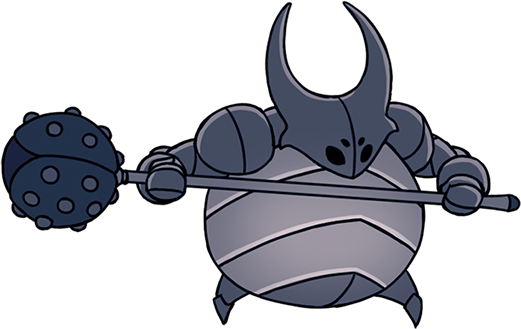

A encuruzilhada é o primeiro desafio que o jogador encontra. O ambiente é confuso e vazio, com poucos inimigos. Ao explorar um poucos se encontra o primeiro mapa, mas é comum que ele não ajude muito. Aqui, começa um dos maiores focos do jogo: o de fazer o jogador se perder perante os ambientes variados. Ao centro dessa área, se encontra o primeiro chefe e o primeiro feitiço para progredir no jogo.
A encuruzilhada é o primeiro desafio que o jogador encontra. O ambiente é confuso e vazio, com poucos inimigos. Ao explorar um poucos se encontra o primeiro mapa, mas é comum que ele não ajude muito. Aqui, começa um dos maiores focos do jogo: o de fazer o jogador se perder perante os ambientes variados. Ao centro dessa área, se encontra o primeiro chefe e o primeiro feitiço para progredir no jogo.
Olá! Como é interessante conhecer outro viajante nestes caminhos esquecidos.
Você é baixinho, mas parece forte.
Sou Quirrel. Eu tenho uma obsessão com lugares inexplorados.
Este antigo reino é o lar de muitos mistérios fascinantes e um dos mais intrigantes está diante de nós.
Um grande ovo de pedra, deitado sobre o cadáver de um antigo reino. E este ovo ... é quente? Certamente emana uma aura única.
Ele pode ser aberto? Está cheio de marcas estranhas...
Eu amo mistérios... E quem sabe as outras surpresas que nos aguardam nas profundezas..." - Quirrel